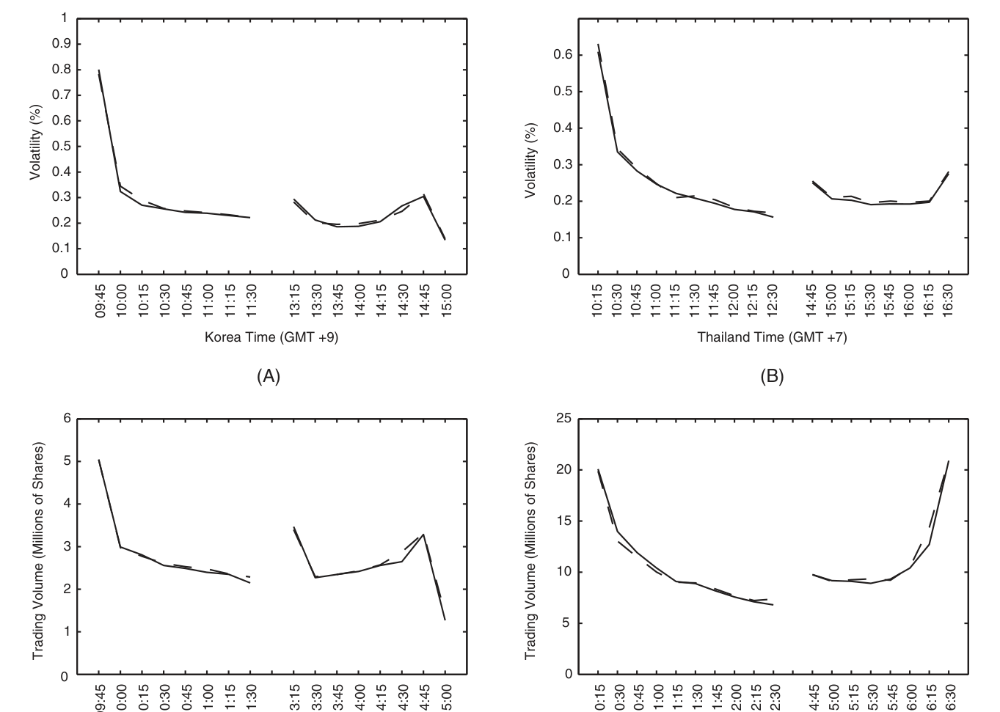
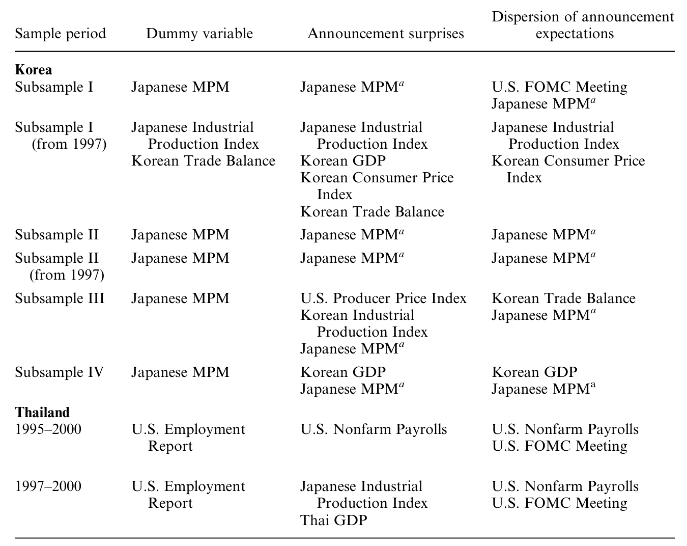
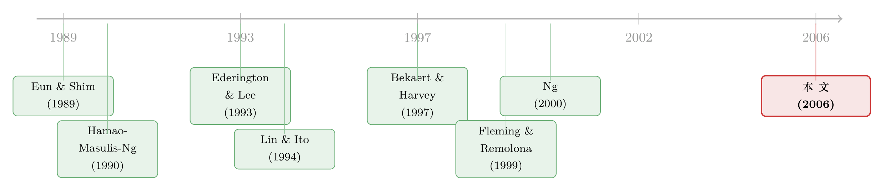

美国打个喷嚏，首尔和曼谷为什么只抖三十分钟？
本文读的是 Wongswan (2006, Review of Financial Studies)：用分钟级的高频数据，作者发现美国非农和日本工业生产指数这类「发达经济体的宏观公告」，会在韩国、泰国股市掀起一阵又大又短的波动与成交放量——平均只持续约 30–45 分钟。过去的研究之所以说「发达市场对新兴市场几乎没有传导」，多半是因为它们用了低频数据，又用错了「信息」的代理变量。
1 一个尴尬的反差
先讲一个让人别扭的事实。
大多数新兴经济体都高度依赖国际贸易，而且贸易对象主要是发达经济体——尤其是美国和日本。按常理说，美国的就业数据、日本的工业产出，这些关于发达经济体基本面的消息，理应深刻地影响新兴经济体的基本面，进而牵动它们的股市。这是经济学最朴素的直觉。
可是，整整一代实证研究给出的答案却是：几乎没有传导。
这个反差有多刺眼？Bekaert and Harvey (1997) 算过一笔账：在 1970 年代中期到 1990 年代初，全球因子平均只能解释韩国股票波动率的约 2%、泰国的约 3%；与此同时，这两个国家的对外贸易分别高达 GDP 的约 70% 和 60%。一边是经济上「命脉级」的贸易联系，一边是金融上「噪声级」的波动传导——两个数字摆在一起，怎么看都不对劲。
这就是本文要解的谜：实体经济上如此紧密相连的两个世界，为什么在金融市场上看起来像是各过各的？
2 也许，不是没有传导，而是我们「看错了」
面对这个反差，一个偷懒的解释是「资本管制把新兴市场和外部隔开了」。但作者不接受这个说法——基本面的联系即便在资本管制下也应当是实打实的。
于是，一个更深的怀疑浮上来：会不会传导一直都在，只是过去的研究用错了工具？
作者把矛头指向了既往文献的两处软肋。
第一处，是「信息」的代理变量选错了。 过去的研究大多沿用资产定价模型里的「创新项（innovation）」，或者干脆用「某个市场的波动率变化」去代表信息冲击。问题在于：驱动一个发达市场价格创新的信息，对一个新兴市场而言，重要性是参差不齐的。换句话说，当你用「美国市场的波动」当作信息代理时，里面既混进了对新兴市场真正重要的料，也混进了一大堆对新兴市场来说近乎噪声的东西。真正的传导信号，就这样被噪声给「淹」掉了。
第二处，是数据频率太低。 既往研究多用周度、月度数据。但另一支文献早就提示：宏观公告对波动率的冲击是极其短命的 [Ederington and Lee (1993)、Andersen and Bollerslev (1998)、Fleming and Remolona (1999)]。如果一个冲击只活 30 分钟，你却拿月度数据去找它，那几乎注定是徒劳——低频数据根本没有足够的统计功效（power）去捕捉这种转瞬即逝的反应。
接着，一个自然的问题是：那把这两处软肋同时补上，会发生什么？
3 关键的一步：把「信息」换成可识别的宏观公告
本文真正的撬动点，在于换了一个可识别（identifiable）的信息来源：不再用市场波动当信息的影子，而是直接盯住四个国家——美国、日本、韩国、泰国——真实发生的重要宏观经济公告。
为什么这一步如此关键？因为当信息源是可识别的、外生地落在某个确切的时刻上时，「噪声」和「伪相关」的问题就被釜底抽薪了。你不再需要从一团波动里反推「这里头有没有信息」，而是直接知道：8:30 整，美国非农数据发布了——现在，去看亚洲市场在随后的十几分钟里发生了什么。
作者用了三种方式来「测量」一则公告里的信息：
- 公告发生的虚拟变量（dummy）：最粗的度量，只问「今天有没有这则公告」。
- 标准化的公告意外（standardized surprise）：用「实际值与分析师预期中位数之差的绝对值」，再除以该公告意外在全样本上的标准差来标准化 [Balduzzi, Elton, and Green (2001)]。它衡量「这则消息有多出乎意料」。
- 预期的离散度（dispersion）：所有分析师预期的横截面标准差。它衡量的不是「意外多大」，而是「事前大家分歧有多大」——也就是公告落地时被化解掉的那部分不确定性。
这第三个度量尤其精巧，后面会看到，它正是理解「成交量」反应的钥匙。
4 识别策略：不是因果实验，而是一场精心设计的「对表」
需要说清楚：这篇文章不是 双重差分 (difference-in-differences, DiD) 或 工具变量 (instrumental variable, IV) 那种因果识别的论文。它的「识别」力量来自三件事的叠加。
其一，时刻是外生且精确的。 美国除 FOMC 外的公告都在东部时间 8:30 发布，而美股要到 9:30 才开盘。由于时差，美国公告对亚洲的冲击出现在「次日亚洲第一个交易时段」。作者据此把每一则公告精确地对齐到分钟级的时间轴上。日本的公告则散落在交易时段内的各个时点（见 Table 1 中各公告的具体时间）。
其二，把「别的噪声」一个个控制掉。 美国公告的冲击隔夜才到，怎么和其他隔夜信息区分开？作者用了一个巧妙的控制变量：标普 500 指数当日剔除公告效应后的净收益绝对值——即「美国交易日开盘到收盘的收益」减去「公告发布后 30 分钟内的收益」。这相当于把「非公告的隔夜美国信息」单独拎出来当控制项。此外还加了首个交易时段、周一上午、假期后上午的虚拟变量。
其三，控制本国公告。 在看美、日公告对韩、泰的影响时，作者同时控制了韩国、泰国自己发布的宏观公告，免得把本地消息误记到外来传导头上。
计量框架上，作者对波动率和成交量分别估计了双因子随机模型（two-factor stochastic model）：一个缓慢变动的长期成分（捕捉日内的「U 形」季节性），加一个允许随信息跳动的短期成分。传导的证据，就藏在这个短期成分对公告变量的载荷里。
5 先量一把「日内的脉搏」
在讲传导之前，得先认识这两个市场平时长什么样。
波动率在本文里的定义朴素得让人安心——就是收益对其期望的绝对偏离：
这里 \(R_{t,n}\) 是第 \(t\) 天第 \(n\) 个 15 分钟时段的收益，\(R^{*}_{t,n}\) 是该时段的期望收益（用所有交易日同一时段收益的样本均值估计）。为什么用 15 分钟而不是 1 分钟？因为指数成分股的非同步交易会污染高频收益 [Lo and MacKinlay (1990)]；作者比较了 1、5、10、15、20、30 分钟的口径，发现 15 分钟恰好让日内收益的自相关最小（韩国子样本 I 和泰国分别只有 −0.02 和 0.06）。
把日内的平均波动率和成交量画出来，是一条漂亮的 U 形曲线（如图 2 所示）：开盘和收盘活跃、午间清淡，午休结束重新开市时还有一个尖峰。这与美股文献里记录的形态高度相似 [Tauchen and Pitts (1983)、Karpoff (1987)]。韩国市场尾部那个突兀的下跌，则是因为收盘前 10 分钟用集合竞价（batch auction）定收盘价的缘故。

Figure 2: plots average intraday volatility (panels A and B) and
这张「脉搏图」的意义在于：它定义了「正常」。只有先知道平静时的 U 形基线长什么样，我们才能在某个公告砸下来的瞬间，识别出那根偏离基线的尖刺。
6 反转：传导一直都在，只是只活三十分钟
把高频数据和可识别的公告对齐之后，反转出现了。
作者发现，美国非农就业（Nonfarm Payrolls, EMPNF）和日本工业生产指数（Industrial Production Index, IPI）的公告，会在韩国和泰国掀起又大又显著的波动率上升。此外，美国的通胀数据（PPI/CPI）和日本货币政策会议（Monetary Policy Meeting, MPM）的决议，对韩国市场也有同样性质的冲击。
但关键词是那两个字——短命。这些效应平均只持续约 30 分钟。这恰恰解释了为什么低频研究两手空空：拿月度数据去捞一个 30 分钟的脉冲，无异于用渔网去舀一勺水。
成交量这边讲了一个互补的故事。那些影响泰国波动率的公告（美国 EMPNF、日本 IPI），再加上美国 FOMC 决议，都会显著推高泰国的成交量；对韩国而言，影响其波动率的公告（美国通胀数据、日本 MPM 和 IPI）同样伴随显著的成交放量。这些成交效应平均持续约 45 分钟，比波动率的反应略长一点。
其中，日本的宏观公告对韩国市场的影响尤为系统（如表 6 所示），日本 IPI 同时显著抬升了韩国的波动率与成交量——考虑到韩日两国在产业链上的紧密咬合，这个方向是讲得通的。

Table 6: shows that the Japanese IPI significantly affects both Korean
7 为什么非要看成交量？一个被波动率藏起来的故事
读到这里，一个聪明的读者会问：既然波动率已经说明了价格在动，何必多此一举去看成交量？
这正是本文最见功力的一笔。
有些宏观公告，对「平均的」市场参与者而言是被预期到的（意味着测出来的公告意外为零）。但「平均预期」掩盖了一个事实：个体参与者之间的预期可能高度分散。当公告落地、不确定性被化解时，那些原本各持己见的人会重新调整持仓——而调仓的量，正比于他们事前分歧的离散度。于是，哪怕价格没怎么动（波动率看不出名堂），成交量也会爆发。
这就是为什么前面那个「预期离散度」的度量如此重要。成交量像一台「分歧探测器」，照见了纯看波动率所照不见的那部分反应。这一发现与一系列微观结构理论严丝合缝 [Karpoff (1986)、Kim and Verrecchia (1991)、Shalen (1993)、Harris and Raviv (1993)]。
一句话概括两个度量的分工：公告意外驱动波动率（价格找新位置），预期离散度驱动成交量（持仓重新洗牌）。
8 「只有三十分钟」，到底重不重要？
作者很诚实地面对了一个质疑：短命的波动和成交，本身在经济上算不上什么大事——谁会在乎一阵 30 分钟的骚动？
他的辩护分两层。
其一，这些短命效应是间接证据：它们指向了信息对收益的传导，而后者在经济上可能相当重要。那为什么不直接看收益？因为在国际语境下，公告对收益的符号是不可预测的——一则公告会同时搅动贸易流、资本流、汇率，它对新兴市场股票收益的净含义，会随情境而异。正、负、零的平均反应，都可能与「金融联系很重要」并存。要把符号定下来，就得押注一个具体的国际宏观结构模型，而这类模型至今仍莫衷一是。
其二，波动率本身是用收益的绝对偏离来度量的——所以「波动率显著」这件事，本身就等于「价格对信息做出了显著的移动」。再加上成交量的实质性反应，作者据此把这篇文章定位为：发达经济体向新兴经济体股市传导信息、且这种传导在经济上重要的证据。
（关于汇率如何在不同股市之间充当传声筒这条线，可参见《汇率，是股市之间那根看不见的传声筒》；关于外资持有人是否加速了全球信息的跨境流动，可参见《外资来了，全球新闻就传得更快吗？》。）
9 数据
把这套设计落地，靠的是几套很「重」的数据：
- 股市数据：韩国证交所与泰国证交所的分钟级总市场指数与成交量。韩国样本 1995/1/3–2000/12/26，因交易时段四度变更被切成子样本 I–IV（分别
947、191、352、148天，对应15,152、1,528、7,040、3,552个 15 分钟收益观测）；泰国样本 1995/1/3–2000/12/29，可用1,471天、26,478个 15 分钟区间。用于估计长期波动率的日度样本更长：韩国 1990–2000 共3,081个观测，泰国 1987–2000 共3,284个。 - 宏观公告数据：美国聚焦五项最能捕捉实体活动（EMPU、EMPNF）、价格（PPI、CPI）与货币政策（FOMC）的发布；日本为 GDP、IPI、WPI、Tankan 商业调查、MPM；韩国为 GDP、IPI、CPI、贸易差额；泰国为 GDP、CPI、贸易差额。含日期、时间、分析师预期中位数与预期标准差。
- 预期数据：美国来自 Money Market Services；亚洲来自 Consensus Economics 与 Bloomberg，自 1997 年起可得。作者特意说明，MMS 的 FOMC 预期与联邦基金期货隐含预期的相关系数高达
0.99，故用 MMS 不致失真，且 MMS 还能提供「分歧」的度量。
值得一提的是，作者也解释了为什么不用在纽约上市的韩泰 ADR 或国家基金来绕开时差——截至 2000 年底，只有 5 只韩国 ADR、0 只泰国 ADR，且交投清淡、跟踪误差大。用本土总市场数据虽有隔夜污染，但收益远大于成本。
10 文献脉络
把这篇文章放进它所在的那条河里，会看得更清楚。
最早，一支文献关心的是发达市场之间的传导：Eun and Shim (1989) 开了国际股市联动的头，Hamao, Masulis, and Ng (1990)、Engle, Ito, and Lin (1990)、King and Wadhwani (1990) 把波动率溢出（volatility spillover）的范式确立起来，Lin and Ito (1994) 则进一步把成交量也纳入东京—纽约的溢出研究。
接着，一支文献开始用宏观公告当信息代理，并发现它对波动率的冲击短命而剧烈：Ederington and Lee (1993)、Andersen and Bollerslev (1998)、Fleming and Remolona (1999)。但这些工作大多停留在发达市场内部。
然后，当人们把目光转向发达 → 新兴的传导时，却屡屡碰壁：Bekaert and Harvey (1997)、Ng (2000) 都只找到至多微弱的证据。谜题就此定格。

但真正关键的一步，是把上面两支文献「拼」起来：用宏观公告这个可识别的信息源（继承第二支），去研究发达对新兴的跨境传导（瞄准第三支的难题），并且换上分钟级的高频数据。本文正坐落在这个交汇点上——它是第一篇用高频数据研究「发达经济体基本面信息向新兴经济体传导」的工作。
11 评论与延伸（Q&A + 研究方向）
(a) 几个可能的疑问
Q：这到底算不算「因果」识别？还是只是相关性？
严格说，它是一个高频事件研究 (event study)，不是 DiD/IV 那种反事实因果。但它的说服力来自三点叠加：信息源的外生时刻（8:30 发布、精确到分钟）、对隔夜美国信息（标普净收益）与本国公告的层层控制，以及「只在公告后那几十分钟集中出现」的时间签名。把这些放在一起，伪相关的空间被压得很小。
Q：为什么不直接回归公告对「收益」的影响，那不是更直接吗？
因为在国际语境下，一则公告对新兴市场收益的符号不可预测——它同时搅动贸易、资本流与汇率，净效应随情境而变。要定符号就得押注一个具体的国际宏观结构模型，而这类模型尚无定论。波动率和成交量的反应则是可预测地为正，所以作者退而求其次，用它们作为信息确实传导过来的间接但稳健的证据。
Q：用波动率绝对偏离 \(|R-R^*|\) 会不会太粗糙？
它确实简单，但有个好处：「波动率显著」直接等价于「价格显著移动」，省去了对收益符号的纠缠。配合 15 分钟口径（把非同步交易的自相关压到近零），这个度量在高频下相当干净。
Q：成交量的结论会不会只是波动率的「翻版」？
不会，而且这正是亮点。有些公告被平均预期所「消化」（公告意外≈0，波动率看不出名堂），但只要分析师之间事前分歧大，公告落地后的持仓再平衡仍会放量。成交量因此携带了波动率看不见的信息——它由预期离散度驱动，而非公告意外。
Q：为什么是非农和日本 IPI 这两个公告最突出？
它们都是关于实体活动的高质量、低噪声信号：非农是美国实体经济的旗舰指标，日本 IPI 则直接关系到与韩、泰产业链咬合最紧的制造业产出。对一个靠对发达国家出口吃饭的新兴经济体，这类「实体活动」消息的相关性，天然高于纯金融噪声。
Q：30 分钟这么短，结论的外部效度（external validity）够吗？
短命恰恰是要点，而非缺陷——它解释了为何低频研究一无所获。至于外部效度，样本只覆盖韩、泰两国、1995–2000、且横跨亚洲金融危机，能不能推广到其他新兴市场、其他时期、危机内外是否一致，确实需要后续检验。
(b) 几个可能的研究问题与提案
1. 把这套高频识别搬到新兴市场公司债/信用利差上。 【经济故事】股市的传导是 30 分钟的脉冲，但公司债市场流动性差、做市商库存约束强，外来信息可能传导得更慢、更不对称（坏消息比好消息更黏）。看看美国非农/FOMC 砸下来时，新兴市场美元公司债的利差与成交在分钟级如何反应，能把「信息传导」和「流动性传导」分开。 【可行性】中。需要 TRACE 之外的新兴市场公司债高频成交数据（或彭博/MarketAxess 的盘口），识别策略可直接沿用本文的公告时刻对齐法。难点在数据可得性与债券交投的稀疏。
2. 外资持有人是不是传导的「导管」？ 【经济故事】如果传导主要由持有发达市场资产、对全球宏观更敏感的外资完成，那么外资持股比例更高的新兴市场（或股票），对美国/日本公告的高频反应应当更强、更快。这能把「传导」从一个黑箱变成可归因到具体投资者群体的机制。 【可行性】中高。可用各国「可投资度（investability）」或外资持股上限的变更做截面/准实验切分，结合本文的高频公告框架。已有相邻工作（如全球私人信息、外资与信息传导）提供了模板。
3. 危机内外，传导的「半衰期」是否不同？ 【经济故事】样本恰好跨越 1997–98 亚洲金融危机。在压力时期，注意力与杠杆都更紧绷，外来公告的冲击可能更大、衰减更慢，甚至出现过度反应。把样本按危机/平静切开，估计冲击的半衰期随状态如何变化，能给「信息传导的状态依赖」提供干净证据。 【可行性】高。数据本文已有，只需在双因子模型里引入状态依赖的短期成分载荷，识别上无需新数据。
4. 把「预期离散度 → 成交量」这条链做成可证伪的结构检验。 【经济故事】本文用离散度解释成交量，背后是 Kim-Verrecchia/Shalen 一类分歧模型。能否用更细的逐笔订单流（order flow），直接验证「离散度大的公告 → 公告后净再平衡量更大」，并估计其弹性？ 【可行性】中。需要新兴市场的逐笔/订单簿数据，识别清晰但数据门槛高；若只能拿到日内成交量，结论的力度会打折。
12 我的判断
贡献。 这篇文章最漂亮的地方，是它把一个看似「已成定论」的负面结论（发达→新兴几乎无传导）翻了过来，而翻盘靠的不是更花哨的模型，而是两个朴素的方法论修正：换一个可识别、低噪声的信息源，换一把足够快的尺子。它告诉我们，过去的「无传导」很可能是测量误差——是低频数据和被噪声污染的信息代理共同制造的幻觉。把波动率与成交量分开、并用「公告意外 vs 预期离散度」对应二者，则是一处教科书级的、把理论与度量对齐的示范。
对识别的担忧。 我有三点不踏实。其一，这终究是关联性证据，作者也坦承无法直接对收益做因果论断——「传导在经济上重要」这步推论，依赖的是「波动即价格移动」这个还算稳的桥，但桥下仍有水。其二，样本横跨亚洲金融危机，而文中的主结论是全样本平均；危机期间的极端波动有没有不成比例地驱动了结果，值得专门拆开看。其三，隔夜美国信息的控制（标普净收益）做得已经很用心，但「公告效应」与「其他隔夜冲击」在同一个隔夜窗口里终究难以彻底正交。
后续想看到什么。 我最想看到的，是把这套高频识别推进到信用市场和外资归因两个方向：前者能检验「信息传导」与「流动性传导」孰先孰后、在危机里如何分叉；后者能把传导从一个市场层面的现象，落到「究竟是谁在传」。如果哪一天能用逐笔订单流，把「分歧→再平衡→成交」这条因果链直接量出弹性，那这篇 2006 年的文章所埋下的那颗种子，才算真正长成了树。
参考文献
- Andersen, T. G., and T. Bollerslev (1998). Deutsche Mark–Dollar Volatility: Intraday Activity Patterns, Macroeconomic Announcements, and Longer Run Dependencies. Journal of Finance 53(1), 219–265.
- Balduzzi, P., E. J. Elton, and T. C. Green (2001). Economic News and Bond Prices: Evidence from the U.S. Treasury Market. Journal of Financial and Quantitative Analysis 36(4), 523–543.
- Bekaert, G., and C. R. Harvey (1997). Emerging Equity Market Volatility. Journal of Financial Economics 43(1), 29–77.
- Ederington, L. H., and J. H. Lee (1993). How Markets Process Information: News Release and Volatility. Journal of Finance 48(4), 1161–1191.
- Eun, C. S., and S. Shim (1989). International Transmission of Stock Market Movements. Journal of Financial and Quantitative Analysis 24(2), 241–256.
- Fleming, M. J., and E. M. Remolona (1999). Price Formation and Liquidity in the U.S. Treasury Market: The Response to Public Information. Journal of Finance 52(5), 1111–1130.
- Hamao, Y., R. W. Masulis, and V. K. Ng (1990). Correlation in Price Changes and Volatility across International Stock Markets. Review of Financial Studies 3(2), 281–307.
- Harris, M., and A. Raviv (1993). Differences of Opinion Make a Horse Race. Review of Financial Studies 6(3), 473–506.
- Karpoff, J. M. (1986). A Theory of Trading Volume. Journal of Finance 41(5), 1069–1087.
- Kim, O., and R. E. Verrecchia (1991). Market Reaction to Anticipated Announcements. Journal of Financial Economics 30(2), 273–309.
- King, M., and S. Wadhwani (1990). Transmission of Volatility between Stock Markets. Review of Financial Studies 3(1), 5–33.
- Lin, W.-L., and T. Ito (1994). Price Volatility and Volume Spillovers between the Tokyo and New York Stock Markets. In J. A. Frankel (ed.), The Internationalization of Equity Markets, University of Chicago.
- Lo, A., and A. C. MacKinlay (1990). An Econometric Analysis of Nonsynchronous Trading. Journal of Econometrics 45(1–2), 181–212.
- Ng, A. (2000). Volatility Spillover Effects from Japan and the U.S. to the Pacific-Basin. Journal of International Money and Finance 19(2), 207–233.
- Shalen, C. T. (1993). Volume, Volatility, and the Dispersion of Beliefs. Review of Financial Studies 6(2), 405–434.
- Tauchen, G. E., and M. Pitts (1983). The Price Variability-Volume Relationship on Speculative Markets. Econometrica 51(2), 485–505.
- Wongswan, J. (2006). Transmission of Information Across International Equity Markets. Review of Financial Studies 19(4), 1157–1189.